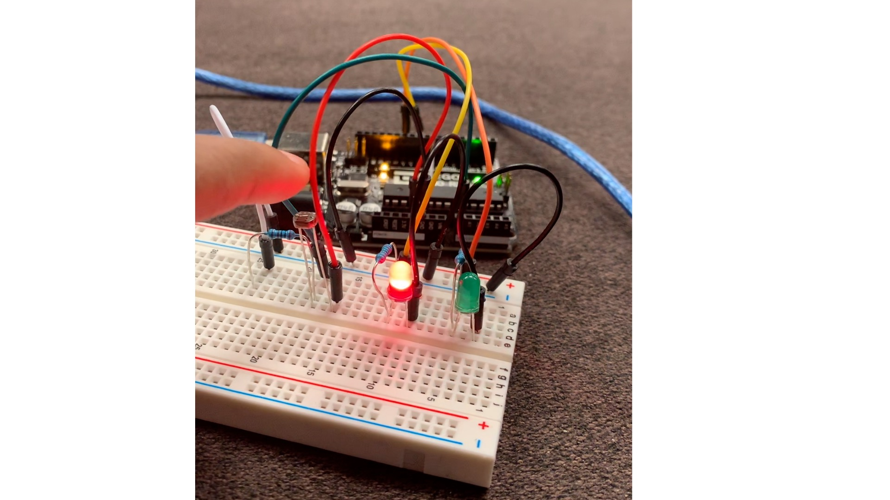
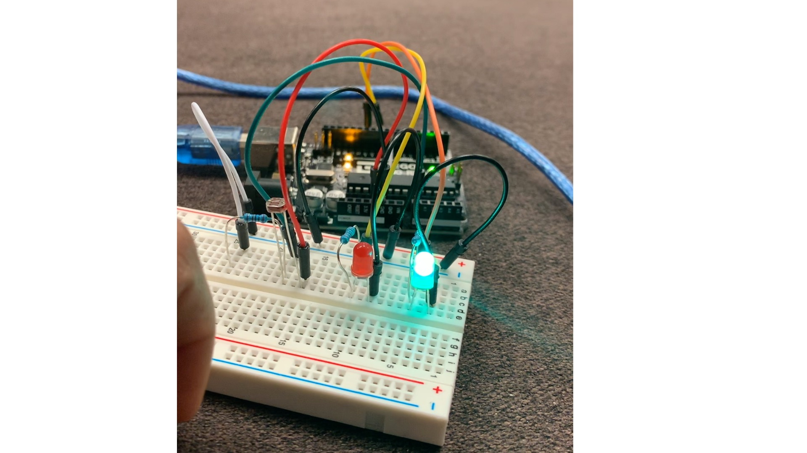
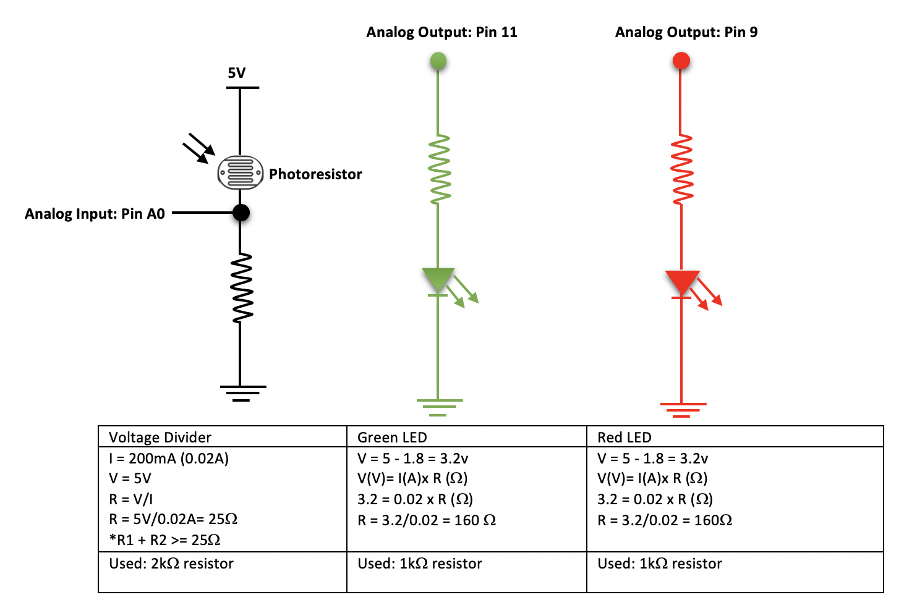
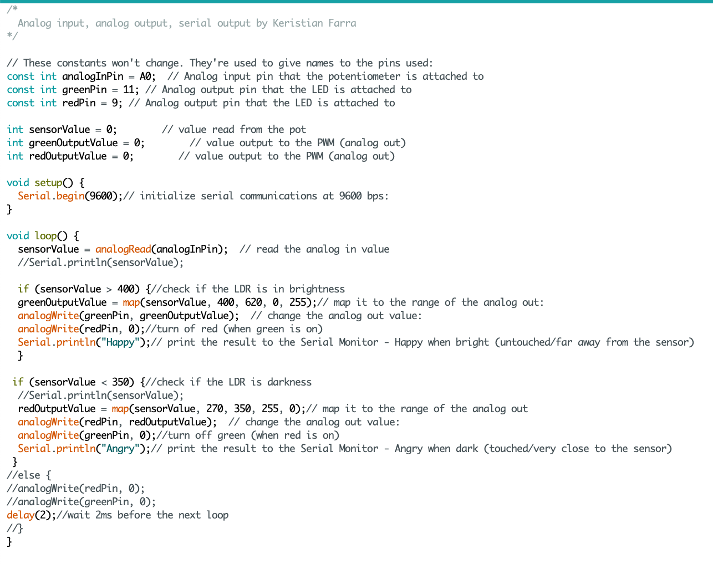

Assignment 3 : Input Output !
Task
Create a schematic, circuit, and code that uses a sensor (e.g. either the photoresistor or the thermistor) in a voltage divider to change the state of an LED. Must use analogRead(), analogWrite(), the map function, and an if-statement in Arduino code. Also, write something to the serial port.
Demo

Circuit
 I used pin A0 for LDR. The Green LED is connected to Pin 11. The Red LED is connected to Pin 9. I have calcuated the resistance for each LED and then used 1kohms resistors for each LED to limit the current flowing through the LEDs.
Schematic
Above is the schematic with the calculations for the two LEDs and the LDR. For the Green and Red LEDs the calcuation shows the resistor value as 160 ohms. Although the closest value was 330, I decided to use 1000 ohms resistor for each LED [Green and Red] with 5V power from the Arduino board because it was a safe choice. I also used 20mA as the target current and 1.8V for the drop voltage[the same for the Green and Red LED. The min. resistor value for LDR is 25 ohms. However, even with the LDR big amount of 5V would flow into the ground so I added a fixed 2000 ohms resistor to further reduce the flow[avoid the risk of equipment damage].
Code
Here is the code I wrote for the Input Output: Sensors. Read the comments on the code to understand how it works.